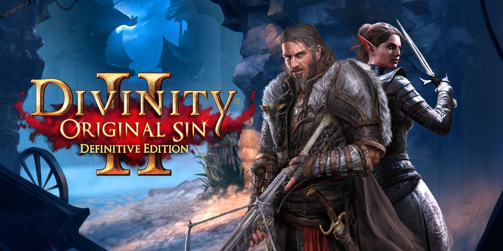

Заголовок блока 1
|  |
Планы Larian на сиквел своего неожиданного хита, Divinity: Original Sin, были без малого утопичными. Новые расы и возможности, озвучка, проработанный мир, несколько игровых режимов — и всё это должно было как минимум не уступать по качеству первой части. А как максимум — превосходить её. Армия фанатов доверилась Larian и полностью профинансировала игру на Kickstarter всего за двенадцать часов при изначальной цели в полмиллиона долларов. За месяц же пользователи собрали больше двух миллионов, разблокировав все дополнительные цели кампании. Но уж слишком масштабным казался проект. Мы до последнего сомневались: ну не может всё быть настолько хорошо, не бывает такого. Что-то должно пойти не так. С большим удовольствием признаём, что ошибались. Original Sin 2 оказалась больше и лучше предшественницы, и придраться здесь практически не к чему. |